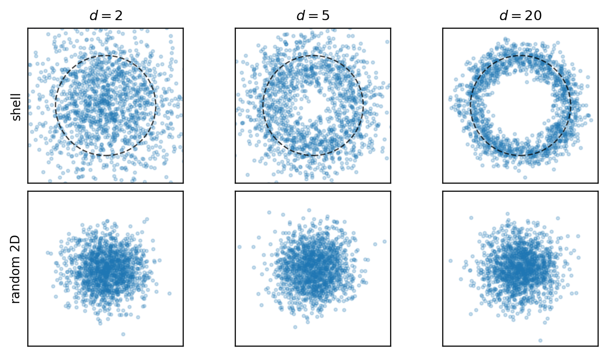
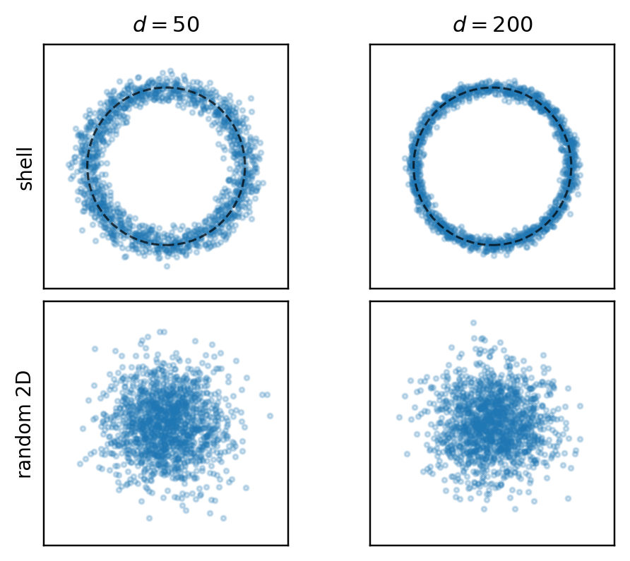
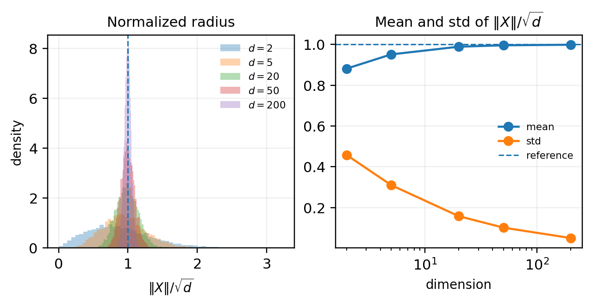
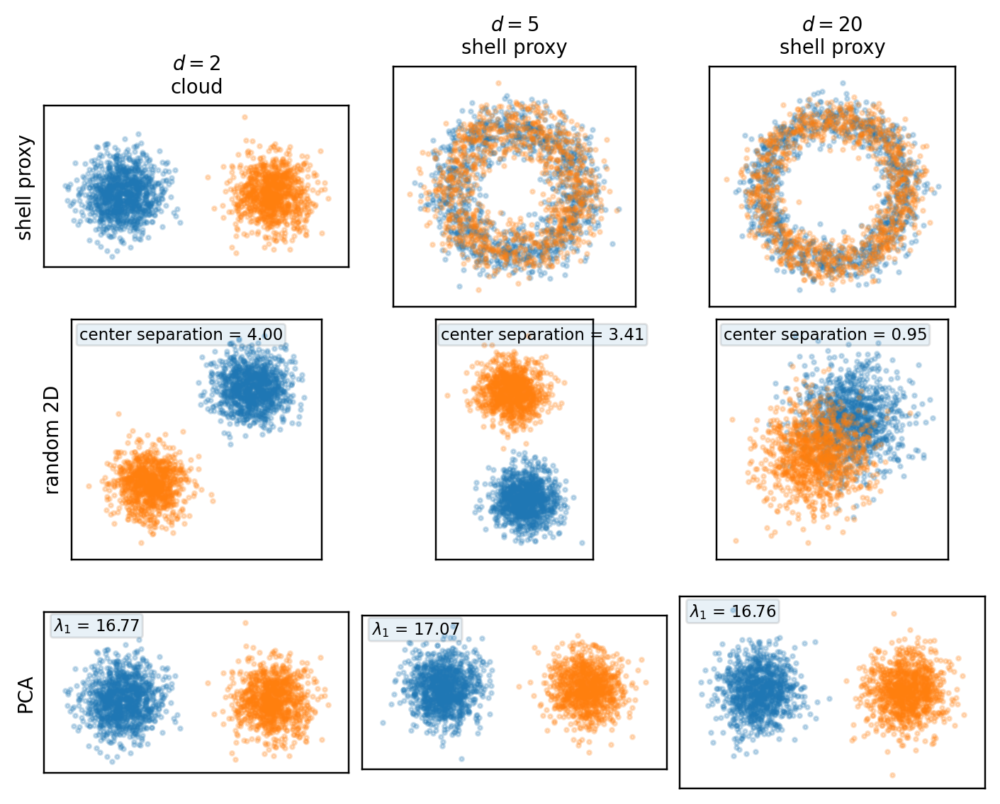
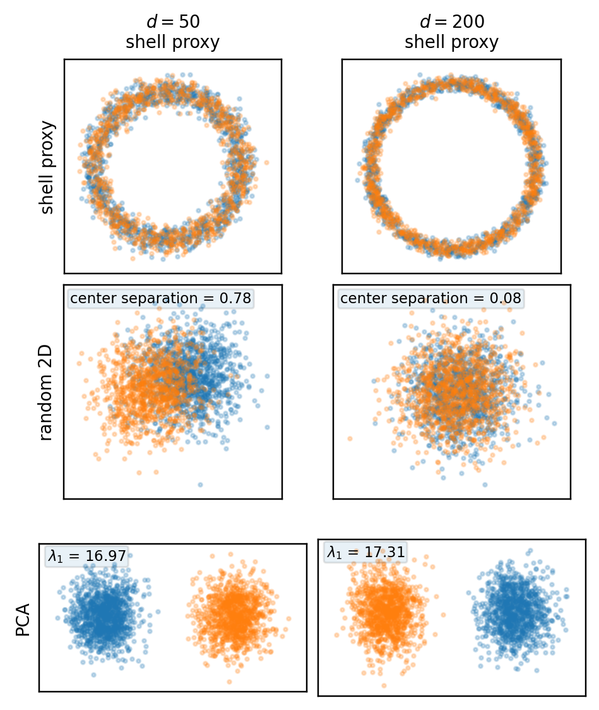
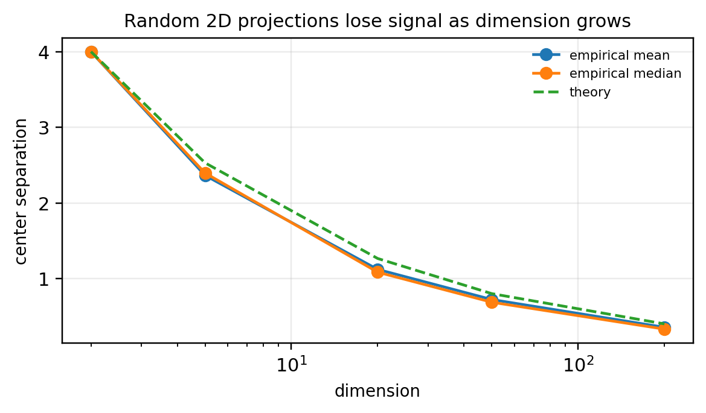
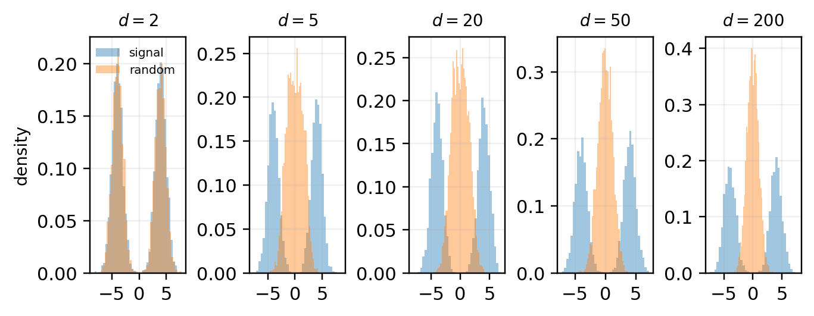

2026-04-18
A recurring trap in high-dimensional exploratory data analysis is that a dataset can have strong geometric structure in the ambient space and still look ordinary in a low-dimensional plot.
We use two examples.
First, the isotropic Gaussian X \sim \mathcal{N}(0, I_d).
Second, the symmetric Gaussian mixture X = S \Delta e_1 + Z, where S \in \{-1,+1\} is a Rademacher sign with equal probability and Z \sim \mathcal{N}(0, I_d).
Here \Delta > 0 is the separation parameter: the two mixture components are centered at \pm \Delta e_1. In the simulations below, we fix \Delta = 4.
Equivalently, X \sim \frac{1}{2}\mathcal{N}(+\Delta e_1, I_d) + \frac{1}{2}\mathcal{N}(-\Delta e_1, I_d).
If X \sim \mathcal{N}(0, I_d), then \|X\|^2 \sim \chi_d^2, so \mathbb{E}\|X\|^2 = d, \qquad \operatorname{Var}(\|X\|^2) = 2d.
Hence the typical radius is about \sqrt d, while the relative shell thickness shrinks with dimension.
At the same time, if U \in \mathbb{R}^{d \times 2} has orthonormal columns, then Y = U^\top X \sim \mathcal{N}(0, I_2).
So the shell is a property of the full ambient-space norm, not of any single 2D projection.
In the shell panels below, each point is placed at radius \|X\|/\sqrt d with a random angle. This is not a true projection; it is only a visualization of radial concentration.


A direct check of the normalized radius R_d = \frac{\|X\|}{\sqrt d} shows the same effect quantitatively.

Now consider X = S \Delta e_1 + Z.
This distribution is bimodal, but the bimodality is not primarily a radial phenomenon.
Indeed, \|X\|^2 = \|S\Delta e_1 + Z\|^2 = \Delta^2 + \|Z\|^2 + 2S\Delta\, e_1^\top Z. Therefore \mathbb{E}\|X\|^2 = d + \Delta^2, \qquad \operatorname{Var}(\|X\|^2) = 2d + 4\Delta^2.
So the norm still concentrates, and the cloud still lives near a shell of radius on the order of \sqrt{d+\Delta^2}.
But the mixture separation lies along a specific direction, namely e_1. That is the central distinction:
The next figures compare three views:


The mixed first row is deliberate. In two dimensions, the true cloud should show the two blobs directly. In higher dimensions, the shell proxy isolates radial concentration and therefore suppresses directional information by construction.
Under a 2D projection with orthonormal columns U, Y = U^\top X \sim \frac{1}{2}\mathcal{N}(+\Delta U^\top e_1, I_2) + \frac{1}{2}\mathcal{N}(-\Delta U^\top e_1, I_2).
So the visible separation is controlled by \Delta \|U^\top e_1\|.
For a random 2D subspace, \mathbb{E}\|U^\top e_1\|^2 = \frac{2}{d}, so the apparent signal is typically of order \Delta \sqrt{2/d}.
That decay explains why the random projections become less informative as the ambient dimension grows.

For this mixture, \mathbb{E}[X] = 0, \qquad \operatorname{Cov}(X) = I_d + \Delta^2 e_1 e_1^\top.
So the leading population principal component is exactly e_1, with top eigenvalue 1+\Delta^2. In this model, PCA aligns with the signal because the signal direction is also the dominant variance direction.
A one-dimensional comparison makes this especially clear. Projection onto the signal coordinate remains bimodal, while projection onto a random direction becomes less informative in high dimension.

A high-dimensional dataset can have all of the following properties at once:
That is why 2D plots in high dimension need interpretation, not just inspection.
Roman Vershynin. High-Dimensional Probability: An Introduction with Applications in Data Science. Cambridge University Press, 2018.
Persi Diaconis and David Freedman. “Asymptotics of Graphical Projection Pursuit.” The Annals of Statistics 12(3), 1984.
Elizabeth S. Meckes. “Quantitative asymptotics of graphical projection pursuit.” Electronic Communications in Probability 14, 2009.
Iain M. Johnstone and Debashis Paul. “PCA in High Dimensions: An Orientation.” Proceedings of the IEEE 106(8), 2018.